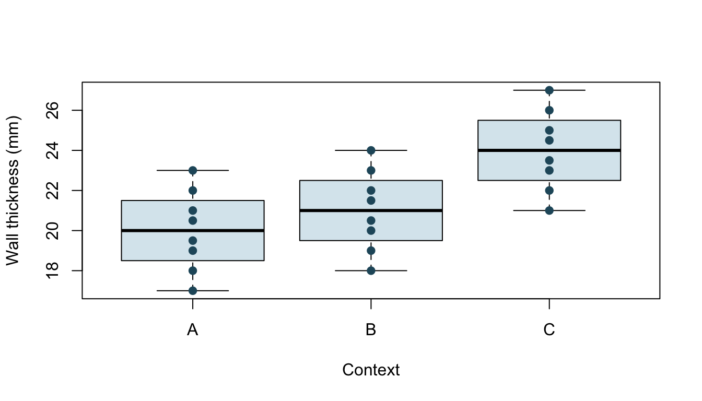

This page shows a rendered Quarto workbook. Download the Week 12 Practice Package (.zip), extract it, and open week12-practice.qmd in RStudio. Keep the data and documentation folders beside it. Edit your copy of the QMD and render it as you work. Use the Week 12 Study Guide for background and open Assignment 8 separately.
How to use this workbook
Work in order. Before running each chunk, predict what will happen. Run it, inspect the results, and explain any mismatch with your prediction in the QMD. For exercises without code, make a prediction, then check it against the study description, an earlier result, or the supplied documentation. Render frequently. The workbook uses base R.
By the end, you should be able to define the observational unit and factor, build and interpret a one-way ANOVA table, evaluate diagnostics, describe effect magnitude and uncertainty, and connect a statistical result to the evidence available in an archaeological study.
Part I — Define the comparison and describe the groups
1. Identify the response and factor
A fictional archaeologist measures one wall thickness per vessel in three contexts. These are the fictional measurements from the Week 12 Study Guide. All modifications and numerical analyses through Exercise 24 also use fictional data.
Predict → Run → Inspect → Explain. Predict how R will store thickness and context. Inspect the object, then name the response, units, factor, and its levels.
The fictional study samples vessels independently. Now imagine that eight measurements attributed to context A actually come from two vessels, with four measurements per vessel.
Predict → Inspect → Explain. Predict whether the eight measurements provide the same information as eight independent vessels. Sketch the two sampling designs and explain what a row represents in each.
3. Move from two means to several
For two independent groups under the classical equal-variance model, the one-way F statistic equals the pooled two-sample t statistic squared. The omnibus F test for three groups asks whether all three population means are equal.
Predict → Run → Inspect → Explain. Predict which summary drops the direction of the A–B difference. Compare the statistics and p-values.
Keep sample sizes alongside summaries of centre and spread. Groups with similar means can still have very different distributions.
Predict → Run → Inspect → Explain. Predict the ordering of means and SDs. Describe one similarity and one difference after looking at the summaries.
group_values <-split(vessels$thickness, vessels$context)group_summary <-t(vapply(group_values, function(x) {c(n =length(x), mean =mean(x), median =median(x), sd =sd(x))}, numeric(4)))round(group_summary, 3)
n mean median sd
A 8 20 20 2.018
B 8 21 21 2.018
C 8 24 24 2.018
5. Put the observations on the plot
A boxplot summarizes centre and spread. The overlaid dots show the individual measurements.
Predict → Run → Inspect → Explain. Predict which contexts overlap. Use specific observations from the plot to explain why comparing means alone misses part of the story.
boxplot(thickness ~ context, data = vessels, col ="#d9e8ee",xlab ="Context", ylab ="Wall thickness (mm)")stripchart(thickness ~ context, data = vessels, vertical =TRUE,add =TRUE, pch =19, col ="#24576a")

Figure 1: Fictional vessel thickness. Dots are individual vessels.
Part II — Reconstruct the ANOVA table
6. Find the grand mean
The grand mean averages observations. It equals the unweighted mean of group means here because each group has eight vessels.
Predict → Run → Inspect → Explain. Predict the direction of change if context C contributes four fewer fictional vessels while keeping its mean. The code retains two symmetric pairs in C.
A residual is an observation minus its own group mean. Its squared value contributes to the within-group sum of squares.
Predict → Run → Inspect → Explain. Hand-calculate the contribution of the first A vessel, then check it in R. Why do positive and negative deviations need to be squared before adding?
The total sum of squares uses distances from the grand mean. The group and residual components account for the same total.
Predict → Run → Inspect → Explain. Predict the outcome of the equality check. Explain what the within-group part retains that the context labels leave unexplained.
With \(k\) groups and \(N\) observations, the factor uses \(k-1\) degrees of freedom. Residuals use \(N-k\) because one mean is estimated in each group.
Predict → Run → Inspect → Explain. Working from the sample sizes, predict both degrees of freedom. Why would using \(N-1\) for the residual row be incorrect?
k <-nlevels(vessels$context)N <-nrow(vessels)df_between <- k -1df_within <- N - kc(between = df_between, within = df_within, total = N -1)
between within total
2 21 23
11. Convert sums of squares to mean squares
A mean square is a sum of squares divided by its degrees of freedom. Both mean squares here have units of mm².
Predict → Run → Inspect → Explain. Predict which mean square is larger. Explain how this can happen even when the raw between-group sum of squares is smaller.
F is the ratio of the between-group to the within-group mean square. These controlled changes alter one feature at a time.
Predict → Run → Inspect → Explain. Predict how F will respond when means move closer and when residuals grow. For each change, name the affected mean square.
original closer_means more_scatter
8.514620 2.128655 2.128655
13. Read the upper tail
Under the classical equal-means null and its assumptions, F follows a reference distribution with the two degrees of freedom above. The p-value is the probability of obtaining an F at least as large as the observed value under that model.
Predict → Run → Inspect → Explain. Predict whether the observed F is beyond the 95th percentile. Describe the shaded area without referring to the probability that the null is true.
Figure 2: Classical F reference distribution for the fictional example.
14. Fit the classical model in R
Write the numerical response on the left of the formula and the factor on the right.
Predict → Run → Inspect → Explain. Predict where each hand-calculated sum of squares should appear. Match both rows to the quantities you computed.
fit <-aov(thickness ~ context, data = vessels)anova_table <-anova(fit)anova_table
Analysis of Variance Table
Response: thickness
Df Sum Sq Mean Sq F value Pr(>F)
context 2 69.333 34.667 8.5146 0.001959 **
Residuals 21 85.500 4.071
---
Signif. codes: 0 '***' 0.001 '**' 0.01 '*' 0.05 '.' 0.1 ' ' 1
15. Report the omnibus result
The omnibus table summarizes the comparison across all contexts. The F statistic has no direction, and the p-value alone does not identify which mean differs.
Predict → Run → Inspect → Explain. Recreate the result from the manual quantities, then write a sentence reporting F, both degrees of freedom, and p in context.
F numerator_df denominator_df p
8.514619883 2.000000000 21.000000000 0.001959148
16. Quantify the observed variation associated with context
Eta-squared divides between-group sum of squares by total sum of squares. It describes the share of observed variation associated with group membership in this one-way model.
Predict → Run → Inspect → Explain. Predict whether the share is above or below one-half. Express the result as a percentage without making a causal claim.
17. Check independence before interpreting a p-value
Imagine that all context C measurements came from a single workshop deposit with several vessels made in the same batch.
Predict → Inspect → Explain. Predict which parts of the fitted table would change if no values changed but you discovered the shared batch. Compare the numerical result with the newly defensible interpretation. What sampling records would help?
18. Inspect residuals and an extreme value
Replace one fictional C value with 38 mm, keeping the original data available. A residual-versus-fitted plot shows scatter around group means. A normal Q–Q plot compares ordered residuals to a normal reference.
Predict → Run → Inspect → Explain. Predict changes in the C mean and its residual spread. Compare the plots with your expectation. What would you check before excluding the observation?
Figure 3: Residual diagnostics after changing one fictional measurement.
19. Interpret formal diagnostics with plots
Give the smaller C group greater spread without changing its mean. Shapiro–Wilk assesses normality within each group. For the mean-centered Levene check, compare absolute distances from each observation to its group mean.
Predict → Run → Inspect → Explain. Predict which spread is greatest. Use the SDs and diagnostic outputs together. Why would a large diagnostic p-value be weak grounds for declaring that an assumption holds, especially for four observations?
unequal_spread$distance <-with( unequal_spread, abs(thickness -ave(thickness, context, FUN = mean)))anova(aov(distance ~ context, data = unequal_spread))
Analysis of Variance Table
Response: distance
Df Sum Sq Mean Sq F value Pr(>F)
context 2 36.45 18.2250 16.524 0.0001033 ***
Residuals 17 18.75 1.1029
---
Signif. codes: 0 '***' 0.001 '**' 0.01 '*' 0.05 '.' 0.1 ' ' 1
20. Compare classical ANOVA with Welch
Both procedures test equality of means. Welch allows different group variances and uses an approximate reference distribution. It still relies on independent observations.
Predict → Run → Inspect → Explain. Predict whether the outputs will have the same denominator degrees of freedom on the unequal-size, unequal-spread data. Compare the conclusions at .05. Explain why changing the test cannot repair clustering.
anova(aov(thickness ~ context, data = unequal_spread))
Analysis of Variance Table
Response: thickness
Df Sum Sq Mean Sq F value Pr(>F)
context 2 43.2 21.6000 2.2807 0.1326
Residuals 17 161.0 9.4706
oneway.test(thickness ~ context, data = unequal_spread, var.equal =FALSE)
One-way analysis of means (not assuming equal variances)
data: thickness and context
F = 1.0731, num df = 2.000, denom df = 6.835, p-value = 0.3933
21. Compare groups using ranks
Kruskal–Wallis compares pooled ranks across groups. With similarly shaped distributions, a rank difference can reflect a location shift. With different shapes or spreads, a median-only interpretation needs justification.
Predict → Run → Inspect → Explain. Predict which original context has the largest mean rank. Compare the rank-test conclusion with classical ANOVA, keeping their statistical questions distinct.
Kruskal-Wallis rank sum test
data: thickness by context
Kruskal-Wallis chi-squared = 10.194, df = 2, p-value = 0.006114
22. Count the family of comparisons
An omnibus result gives a reason to examine individual differences. Repeated unadjusted tests increase opportunities for a false positive across the family.
Predict → Run → Inspect → Explain. List the three pairs before running the code. How many pairs would four contexts produce? Why would treating each comparison as an isolated test miss part of the problem?
combn(levels(vessels$context), 2)
[,1] [,2] [,3]
[1,] "A" "A" "B"
[2,] "B" "C" "C"
choose(c(3, 4), 2)
[1] 3 6
23. Read Tukey intervals and adjusted p-values
Tukey HSD uses the classical model’s pooled residual variance. It gives simultaneous intervals and adjusted p-values for the family of pairwise differences.
Predict → Run → Inspect → Explain. Predict the signs of B–A and C–B. For both pairs, identify the estimate in mm, the interval, and the adjusted p-value. Explain what an interval containing zero leaves plausible.
TukeyHSD(fit, "context", conf.level =0.95)
Tukey multiple comparisons of means
95% family-wise confidence level
Fit: aov(formula = thickness ~ context, data = vessels)
$context
diff lwr upr p adj
B-A 1 -1.5429758 3.542976 0.5903442
C-A 4 1.4570242 6.542976 0.0019587
C-B 3 0.4570242 5.542976 0.0190298
24. Separate statistical evidence from effect magnitude
Convert the fictional vessel thickness from millimetres to centimetres. The numerical mean differences change units. The F ratio and eta-squared are unitless.
Predict → Run → Inspect → Explain. Predict what happens to each sum of squares, F, and eta-squared. What additional context would you need to decide whether a 1 mm difference matters archaeologically?
SS_between F eta_sq
mm 69.3333333 8.51462 0.4477933
cm 0.6933333 8.51462 0.4477933
Part IV — Return to the iron-smelting evidence
25. Audit the authentic teaching file
The Assignment 8 CSV contains legacy analyses of slag and ore. Each row represents one chemical analysis. The compilation includes repeated localities and a Jura comparator with late medieval slag and modern ore. The teaching file has no site, material, or chronology fields. Consult the course codebook and provenance in the package’s documentation folder and the published case study.
Predict → Run → Inspect → Explain. Before running the code, predict why the number of rows may differ from the number of independent localities. Report the variable roles and regional sample sizes, and identify a limitation you cannot check from the CSV.
'data.frame': 0 obs. of 4 variables:
$ source_row_id: int
$ region : chr
$ element : chr
$ element_value: num
nrow(iron)
[1] 240
table(iron$region)
HCM JUR MAS SIL
80 12 64 84
unique(iron$element)
[1] "Si_CLR"
colSums(is.na(iron))
source_row_id region element element_value
0 0 0 0
26. Interpret CLR-Si with a fictional composition
CLR-Si is the log of Si divided by the geometric mean of the Si–Ca–Al–Mn composition within a row. The original study replaced missing component values before transforming. An imputed value in any component can change the ratio. These example compositions are invented.
Predict → Run → Inspect → Explain. Si is held fixed while Ca increases. Predict which denominator is larger and explain why CLR-Si changes.
example_a <-c(Si =8, Ca =2, Al =2, Mn =2)example_b <-c(Si =8, Ca =8, Al =2, Mn =2)clr_si <-function(parts) {unname(log(parts["Si"]) -mean(log(parts)))}c(example_a =clr_si(example_a), example_b =clr_si(example_b))
example_a example_b
1.0397208 0.6931472
27. Debug an archaeological claim
A draft says: “The regional file contains independent observations because every row has an ID. If the omnibus test is significant, every pair differs, and the group with higher CLR-Si must use a different ore source.”
Predict → Inspect → Explain. Mark one design error, one statistical error, and one compositional or archaeological error. Check your reasoning against Exercises 17, 23, 25, and 26. Rewrite the claim as a conditional interpretation and name two additional forms of evidence you would need to argue for an ore source.
Mastery checklist
Final challenge — make an argument without code
Write a brief report using the fictional vessels. State the observational unit and equal-means null, summarize the group distributions, and report the omnibus result, eta-squared, and one Tukey comparison with its interval. Explain what changed in the unequal-size, unequal-spread scenario and what evidence would be needed to rule out a sampling explanation. Finish with two sentences on why you would be more cautious when interpreting the legacy iron data. Use the actual Assignment 8 QMD for its inferential work.
Clean Render Test
Save the workbook and keep the data folder beside your QMD.
In RStudio choose Session → Restart R.
Without creating objects in the Console, render the entire QMD. From a terminal in the extracted folder you can also run quarto render week12-practice.qmd.
Check that the figures, worked outputs, and authentic data audit appear. If a chunk fails, check which earlier chunk creates its input or whether the data folder moved.